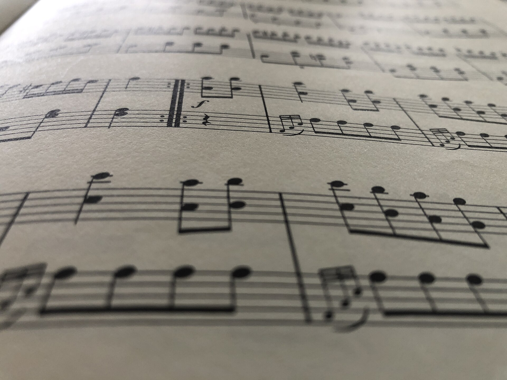
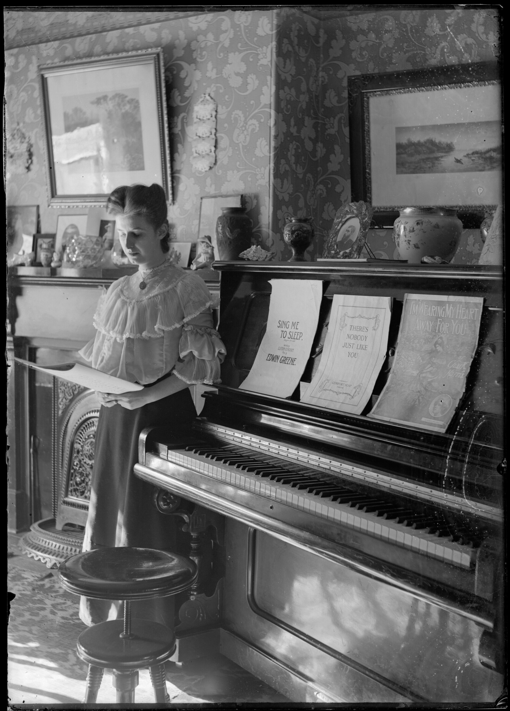
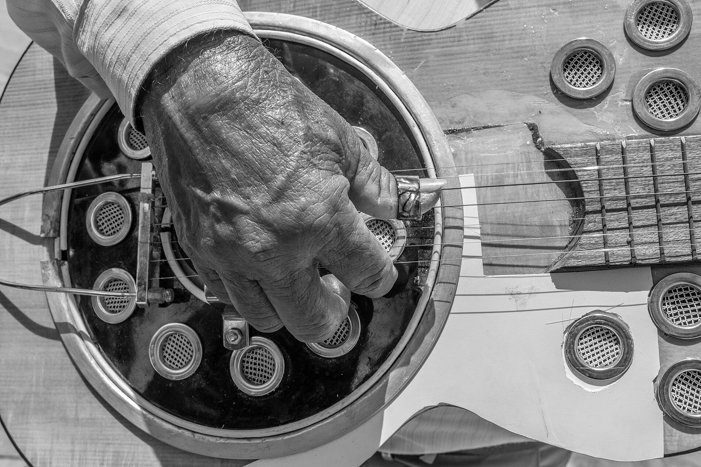
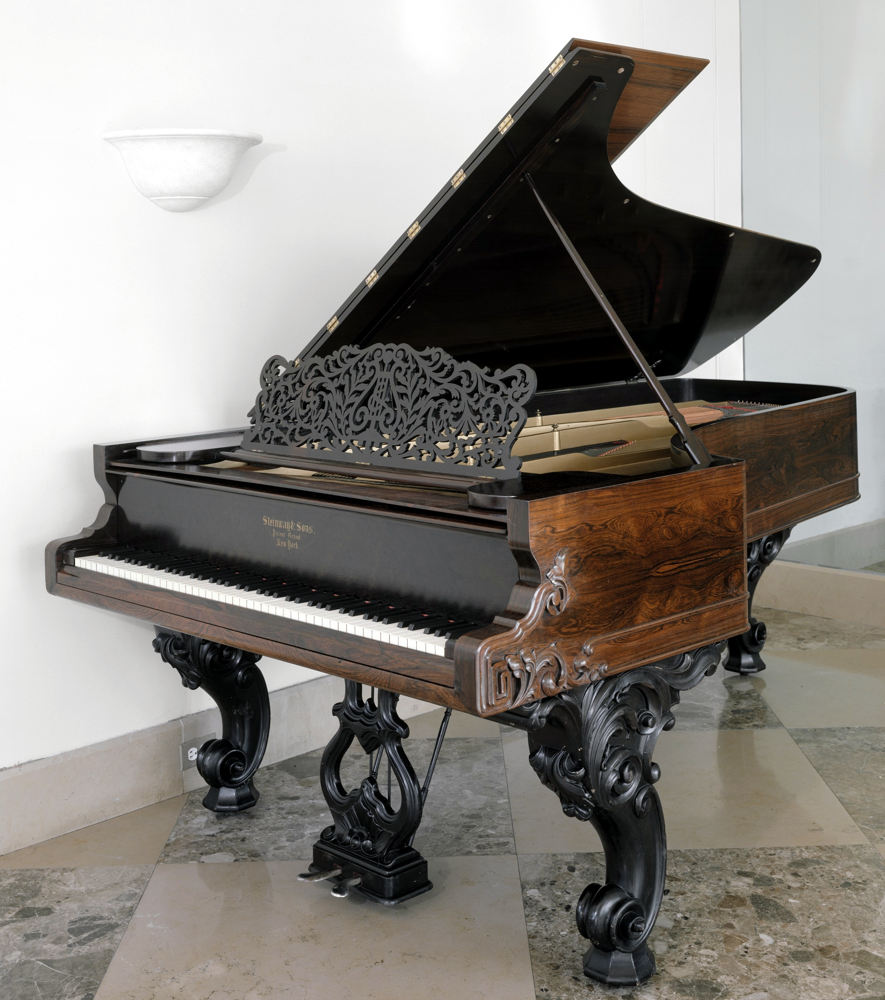
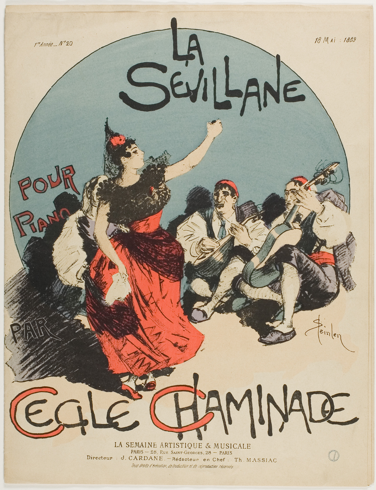

Primeiro grau: Fácil
Posições fundamentais, ritmo direto e estrutura simplificada para você tocar a música inteira já nos primeiros dias de estudo.

Escolha o seu instrumento e aprenda repertório real desde a primeira semana: na Harmonia, cada música possui quatro arranjos progressivos para você evoluir do básico ao avançado sem abandonar a canção.

Para qualquer instrumento
O painel filtra automaticamente todas as obras, videoaulas e PDFs para o instrumento selecionado na sua matrícula.
Em vez de travar o iniciante em músicas difíceis ou entediar quem já toca, cada obra é escrita em quatro degraus pedagógicos claros.
Progressão contínua na mesma obra
Primeiro grau: Fácil
Posições fundamentais, ritmo direto e estrutura simplificada para você tocar a música inteira já nos primeiros dias de estudo.

Segundo grau: Médio
Transições suaves entre regiões do instrumento, inversões, variações rítmicas e condução melódica sem saltos bruscos.

Terceiro grau: Difícil
Articulação refinada, dedilhados elaborados, independência de vozes e controle consciente de dinâmica entre trechos suaves e intensos.

Quarto grau: Avançado
Arranjo completo de concerto: rearmonização, tensões harmônicas, frases de passagem, introduções próprias e domínio de palco.

Simulador da sala de aula
Como a aula evolui em cada nível
Foco didático: dominar a pulsação e a posição base das mãos para tocar a obra inteira sem interrupções.
Como as aulas deste nível são organizadas para o aluno:
Clique nos graus ao lado ou ouça a amostra sonora para perceber como o arranjo ganha riqueza a cada nível.
No ensino tradicional, o aluno iniciante passa meses longe do repertório real. Na Harmonia, você começa tocando o Grau Fácil hoje e, quando estiver seguro, sobe para o Médio, Difícil e Avançado na mesma tela.
Recursos didáticos pensados para transformar a prática diária em evolução consistente
Didática e estudo personalizado
Ao escolher seu instrumento no cadastro, seu painel apresenta diretamente o repertório e as aulas gravadas para ele, sem distrações.
Toque no nível adequado à sua técnica atual e use a mesma música como escada para alcançar arranjos mais elaborados.
Cada nível possui sua própria sequência de videoaulas explicando a mecânica do arranjo, as passagens mais exigentes e a execução final.
Ferramentas de sala de ensaio
Compare como uma passagem soa no nível Fácil ou no Avançado com um único atalho, sem sair da página de estudo.
Baixe o material complementar anexado especificamente a cada aula para ler no tablet ou imprimir para a sua estante.
Saiba exatamente qual habilidade técnica, rítmica ou harmônica você está desenvolvendo em cada grau antes de dar o play.

Acervo vivo para múltiplos instrumentos
A plataforma foi construída para abrigar trilhas de qualquer instrumento musical cadastrado pelos professores no Estúdio: cordas, teclas, sopros, percussão ou voz, mantendo sempre a mesma organização em quatro níveis.
Não espere anos para tocar as músicas que você admira. Comece no Grau 1 hoje e descubra o prazer de evoluir compasso por compasso no seu instrumento.
Matrícula gratuita com acesso imediato à trilha do seu instrumento, player em 4 níveis e materiais em PDF.
Crie sua conta em poucos segundos, selecione o instrumento que deseja praticar e inicie sua primeira aula.